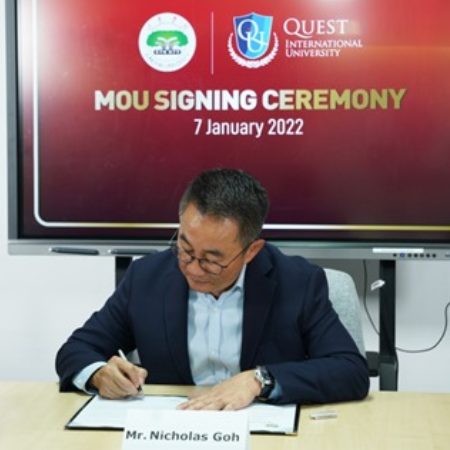
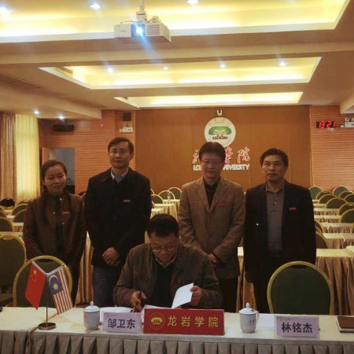
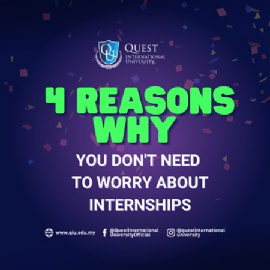

January 12, 2022
11:07 am
News
At QIU, we’re always looking for like-minded collaborative partners who are striving for educational and research excellence.
Recently, we had the pleasure of expanding our list of partnerships by signing a Memorandum of Understanding (MoU) with China’s Longyan University. Our newest partner is one of the full-time public undergraduate universities in the Fujian Province, offering over 40 majors across eight fields of study.
The collaboration will see both educational institutions join forces on education, in-depth biotechnology research, and the characteristics of teaching.
During the virtual signing ceremony, the MoU was signed by QIU Chief Operating Officer (COO) Mr Nicholas Goh and Longyan University Vice President Mr Zou Weidong.
“It is extremely important to build good relationships and collaborate with educational institutions outside Malaysia, and we are confident that both universities will be able to learn from each other and improve,” said Mr Nicholas.
“We hope to carry out in-depth cooperation in scientific research and the exchange of teachers and students, and we look forward to working together with QIU,” added Mr Weidong.
Also present at the signing were the Dean of QIU’s Faculty of Integrated Life Sciences Prof Dr Vilasini Pillai, Deputy Dean Dr Wendy Liu, Biotechnology Programme Coordinator Dr Kamariah Hassan, and the Head of China Recruitment and Collaboration Ms Li Rui.
Our partners were also represented by Longyan University’s Director of International Cooperation Office Mr Lin Mingjie, Deputy Director of International Cooperation Office Ms Hu Weiwei, Deputy Director of Academic Affairs Office Mr Qiu Ronghai, and the Dean of the School of Life Science Mr Qiu Longxin.

Congratulations all around! We look forward to more innovations and success stories from our new partnership!
Learn More

January 5, 2022
3:50 pm
Alumni, Features
It’s not easy getting internship placements nowadays. In the midst of the COVID-19 pandemic, there aren’t any guarantees as companies around the world tighten their belts.
Despite the unprecedented challenge, we’re glad to report that all of our students who signed up for an internship got their placement!
So how did our Career and Professional Development Centre (CPDC) help students achieve this 100 per cent rate—even as a global pandemic raged through the world’s economy?
Here are four ways they help you prepare for internship and career opportunities.
Let’s start with your job search. The CPDC has created its own version of Jobstreet—a Career Management portal where more than 200 employers post their vacancies.
In 2021, these companies put up 361 job posts on the portal and each post can have multiple vacancies for jobs and internships.
By the way, don’t forget that this portal is exclusively for QIU students! You can imagine how easy it is for you to find the placement you want.
Everyone stresses over their résumé. Have I put enough details? Have I put too much? What do I add in if I haven’t even had a job yet?
Well, you don’t have to stress at QIU. The CPDC has prepared a basic “skeleton résumé” for all our students, consisting of:
Basic personal information
Educational background (Secondary School to your highest qualifications)
The subjects you have taken while studying with us (you can choose which subjects to include in your résumé)
Internship information is captured as well.
From there, you can add your employment experience and academic achievements. Preparing a résumé for your internship or job hunt has never been more simple!
So imagine it’s the night before your first day. You’re already nervous, and now you have to worry about what you’re going to wear and how you’re going to address your boss.
Should you be overly formal when you write your work emails? Should you keep your phone on silent the whole day? SO MANY QUESTIONS!
Not to worry. The CPDC offers professional etiquette training sessions to make sure you know exactly what to expect at your workplace. It has also a series of professional development workshops such as building your resume, time & stress management, job interview skills, presentation skills and basic data analysis skills using Microsoft Excel.
The CPDC also has a database containing feedback from previous interns. Basically, your seniors rate their experiences interning at a specific company and state whether they recommend their juniors to do the same.
This will help you make the right choice.
More often than not, a personal connection can make all the difference in your job or internship search.
The CPDC knows this, and that’s why they organise multiple career events where you can engage with employers and decision-makers from a huge range of companies.
In addition to annual career fairs, they consistently host career talks so you can hear directly from the industry leaders who are actually hiring. This is where you can ask them your questions and understand what is expected from a candidate.
And of course, you’ll also be able to find out what skills they are looking for in an internship or job candidate. Keep in mind that these skills change quickly in the industry, so it’s good to get continuous updates.
Learn More